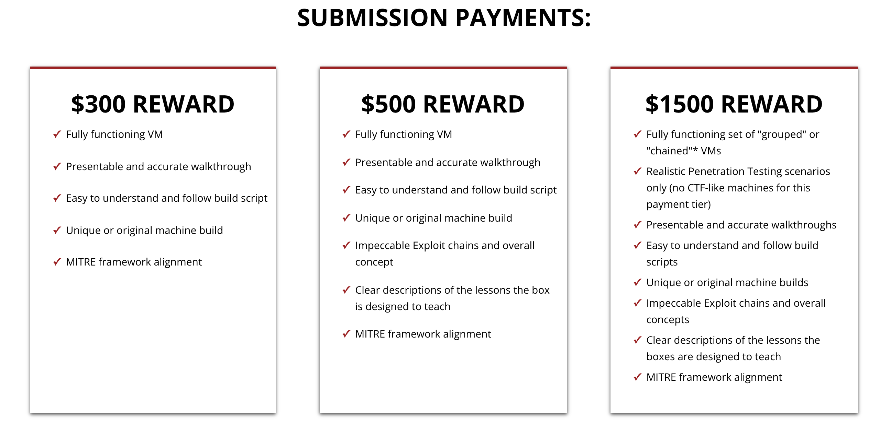

Art of Creating Machines
1) Getting Started
1.1) Introduction to UGC Program
User-Generated Content Program is a program that allows people to make submission to Offensive Security Proving Grounds lab and receive compensation upon acceptance after being reviewed by the Labs Team.
As of 11th January 2022, the rewards are as following:

You can find more information here :
- https://www.offensive-security.com/labs/submit/
- https://help.offensive-security.com/hc/en-us/articles/360049610511-User-Generated-Content-FAQ
1.2) Researching
So before starting to build a machine, you’ll have to first perform a lot of researching to develop an idea for the machine. Following are some examples of what I personally do :
- Great place to start would be on twitter and look for any interesting research by companies / individuals. You should also bookmark them so you can check regularly if they added anything new.
- Stay updated on new vulnerabilities through twitter or The Daily Swig by PortSwigger.
- If you’re planning to build a CVE based machine, browsing through exploit-db.com and cve.mitre.org will be very helpful.
- Keep an eye on Exploit Database Security Papers for new papers.
In the end it all comes down to how creative you can be with vulnerabilities you have discovered and if they go well with each other to make a complete machine. You can reach out to the Labs Team on Offensive Security Discord in #user-generated-content channel to get your ideas reviewed by them before proceeding to make the machine.
1.3) Setting up Environment
You can use Vagrant to easily deploy and destroy VM’s on VMware / VirtualBox. Following links will be helpful for the installation and configuring the providers :
- https://www.vagrantup.com/docs/installation [ Vagrant Installation ]
- https://www.vagrantup.com/docs/providers/virtualbox [ VirtualBox Provider ]
- https://www.vagrantup.com/docs/providers/vmware/installation [ Installing VMware provider ]
- https://vagrantcloud.com/search [ VM Images ] **
1.3.1) Linux Environment
Following is an example on how to deploy a Ubuntu 20.04 VM using vagrant on VMware provider :
i) Create a directory with the following structure :

- box directory here will be used for the Vagrant environment.
- data directory will be mounted on the machine so we can share files easily.
ii) Move into box directory and run the following command to initialize the directory to be a Vagrant environment by creating an initial Vagrantfile :
- vagrant init bento/ubuntu-20.04
iii) Next step is to edit VagrantFile :
- Editing VM provider to vmware_desktop and mounting data directory on the machine :

iv) For deploying the VM, run the following command from the box directory :
- vagrant up
v) To interact with the box, you can ssh by running the following command from the box directory :
- vagrant ssh

vi) To stop the VM, run the following command :
- vagrant halt
vii) To destroy the VM, run the following command : [ NOTE: Everything will be lost except files in data directory ]
- vagrant destroy
1.3.2) Windows Environment
Following is an example on how to deploy a Windows Server 2019 Standard Desktop VM using vagrant on VMware provider :
i) Create a directory with the following structure :

- box directory here will be used for the Vagrant environment.
- data directory will be mounted on the machine so we can share files easily.
ii) Move into box directory and run the following command to initialize the directory to be a Vagrant environment by creating an initial Vagrantfile :
- vagrant init gusztavvargadr/windows-server-2019-standard-desktop
iii) Next step is to edit VagrantFile :
- Editing VM provider to vmware_desktop and mounting data directory on the machine :

iv) For deploying the VM, run the following command from the box directory :
- vagrant up
v) To interact with the box, you can ssh by running the following command from the box directory :
- vagrant ssh

vi) To stop the VM, run the following command :
- vagrant halt
vii) To destroy the VM, run the following command : [ NOTE: Everything will be lost except files in data directory ]
- vagrant destroy
2) Building Machines
In this section you will find some examples on how to setup / configure certain things for Active Directory and Windows using PowerShell. It will help you get the idea on how things are done.
2.1) Active Directory
2.1.1) Setting up an Active Directory Domain
i) After deploying a Windows Server 2019 VM, we’ll change the administrator password and rename the machine using the following powershell commands :
# Changing Admin Password
net user administrator 'P@$$w0rd!1234' /active:yes
# Changing Machine name
$SecPassword = ConvertTo-SecureString 'P@$$w0rd!1234' -AsPlainText -Force
$Cred = New-Object System.Management.Automation.PSCredential('Administrator', $SecPassword)
Rename-Computer -NewName "DC01" -DomainCredential $Cred -Restart
- Machine will reboot in the end.
ii) Next we’ll be configuring DNS , installing active directory domain services and promote the server to a domain controller using the following powershell commands :
# Setting DNS Server Addresses
Set-DnsClientServerAddress -InterfaceIndex (Get-NetAdapter).InterfaceIndex -ServerAddresses ("127.0.0.1","8.8.8.8")
# Installing AD Domain Services
Install-WindowsFeature -Name AD-Domain-Services -IncludeManagementTools
# Promoting to a domain controller
$SecPassword = ConvertTo-SecureString 'P@$$w0rd!1234' -AsPlainText -Force
Install-ADDSForest -DomainName "based.offsec" -CreateDnsDelegation:$false -DatabasePath "C:\Windows\NTDS" -SafeModeAdministratorPassword $SecPassword -DomainMode "7" -DomainNetbiosName "BASED" -ForestMode "7" -InstallDns:$true -LogPath "C:\Windows\NTDS" -SysvolPath "C:\Windows\SYSVOL" -Force:$true
- For better understanding of Install-ADDSForest arguments please refer : https://docs.microsoft.com/en-us/powershell/module/addsdeployment/install-addsforest
- Machine will reboot in the end.
2.1.2) Joining a machine to Active Directory Domain
i) After deploying a windows vm of your choice , we’ll change the local administrator password and rename the machine using the following powershell commands :
# Changing Admin Password
net user administrator 'ClientMachine123!!' /active:yes
# Changing Machine name
$SecPassword = ConvertTo-SecureString 'ClientMachine123!!' -AsPlainText -Force
$Cred = New-Object System.Management.Automation.PSCredential('Administrator', $SecPassword)
Rename-Computer -NewName "CLIENT01" -DomainCredential $Cred -Restart
- Machine will reboot in the end.
ii) Next we’ll be configuring the DNS and connecting to the AD Domain :
# Setting DNS
Write-Host "[2] Setting DNS and Connecting to Domain"
$DC01= Read-Host "Enter DC01 IP Address"
Set-DnsClientServerAddress -InterfaceIndex (Get-NetAdapter).InterfaceIndex -ServerAddresses ("$DC01","8.8.8.8")
# Adding CLIENT01 to based.offsec domain
$SecPassword = ConvertTo-SecureString 'P@$$w0rd!1234' -AsPlainText -Force
$Cred = New-Object System.Management.Automation.PSCredential('BASED\Administrator', $SecPassword)
Add-Computer -DomainName based.offsec -Credential $Cred -Restart -Force
- DC01 should be running.
- Machine will reboot in the end.
2.1.3) Setting up Child Domain
i) After deploying a Windows Server 2019 VM, we’ll change the administrator password and rename the machine using the following powershell commands :
# Changing Admin Password
net user administrator 'VeryBasedIndeed123!'
# Changing Machine name
$SecPassword = ConvertTo-SecureString 'VeryBasedIndeed123!' -AsPlainText -Force
$Cred = New-Object System.Management.Automation.PSCredential('Administrator', $SecPassword)
Rename-Computer -NewName "DC02" -DomainCredential $Cred -Restart
- Machine will reboot in the end.
ii) Next we’ll be configuring DNS , Installing Active Directory domain services and promoting to a domain controller in a child domain ( child.based.offsec ) :
# Setting DNS Ip Address as DC01
$DC01= Read-Host "Enter DC01 IP Address"
Set-DnsClientServerAddress -InterfaceIndex (Get-NetAdapter).InterfaceIndex -ServerAddresses ("$DC01","8.8.8.8")
# Installing AD Domain Services
Install-WindowsFeature -Name AD-Domain-Services -IncludeManagementTools
# Promoting to a domain controller
$SecPassword = ConvertTo-SecureString 'P@$$w0rd!1234' -AsPlainText -Force
$Cred = New-Object System.Management.Automation.PSCredential('BASED\Administrator', $SecPassword)
Install-ADDSDomain -Credential $Cred -NewDomainName "child" -ParentDomainName "based.offsec" -InstallDNS -CreateDNSDelegation -NewDomainNetbiosName "CHILD" -DomainMode "7" -ReplicationSourceDC "DC01.based.offsec" -SafeModeAdministratorPassword $SecPassword -DatabasePath "C:\Windows\NTDS" -LogPath "C:\Windows\NTDS" -SysvolPath "C:\Windows\SYSVOL" -Force:$true
- For better understanding of Install-ADDSDomain arguments, please refer : https://docs.microsoft.com/en-us/powershell/module/addsdeployment/install-addsdomain
- DC01 should be running.
- Machine will reboot in the end.
2.1.4) Configuring Services
i) Configuring WinRM using PowerShell :
Set-Service WinRM -StartMode Automatic
# Verify start mode and state - it should be running
Get-WmiObject -Class win32_service | Where-Object {$_.name -like "WinRM"}
Set-Item WSMan:localhost\client\trustedhosts -Value * -Force
# Opening WinRM port in firewall
netsh advfirewall firewall add rule name="WinRM-HTTP" dir=in localport=5985 protocol=TCP action=allow
ii) Configuring RDP using PowerShell :
Set-ItemProperty 'HKLM:\SYSTEM\CurrentControlSet\Control\Terminal Server\' -Name "fDenyTSConnections" -Value 0
Set-ItemProperty 'HKLM:\SYSTEM\CurrentControlSet\Control\Terminal Server\WinStations\RDP-Tcp\' -Name "UserAuthentication" -Value 0
Enable-NetFirewallRule -DisplayGroup "Remote Desktop"
iii) Installing ADCS using PowerShell :
Add-WindowsFeature Adcs-Cert-Authority -IncludeManagementTools
Install-AdcsCertificationAuthority -CAType EnterpriseRootCA -Force:$true
2.1.5) Configuring AD Accounts
i) Disabling password complexity :
secedit /export /cfg c:\secpol.cfg
(gc C:\secpol.cfg).replace("PasswordComplexity = 1", "PasswordComplexity = 0") | Out-File C:\secpol.cfg
secedit /configure /db c:\windows\security\local.sdb /cfg c:\secpol.cfg /areas SECURITYPOLICY
rm -force c:\secpol.cfg -confirm:$false
gpupdate /force
ii) Adding user to an AD domain :
$UserPassword = ConvertTo-SecureString 'password123' -AsPlainText -Force
New-ADUser -Name "Enox" -GivenName "Enox" -SamAccountName "enox" -AccountPassword $UserPassword -ChangePasswordAtLogon $False -Enabled $True
iii) Active Directory Groups :
⇒ Remote Management Users - users part of this group are able to WinRM to the machine.
net localgroup "Remote Management Users" /add enox /dom
⇒ Remote Desktop Users - users part of this group are able to RDP to the machine. [ NOTE: You’ll also have to grant the user SeRemoteInteractiveLogonRight ]
# Adding user to Remote Desktop Users group
net localgroup "Remote Desktop Users" /add enox /dom
# Granting SeRemoteInteractiveLogonRight using Carbon
$Identity = "BASED\enox"
$CarbonDllPath = "C:\Data\Carbon\bin\Carbon.dll"
[Reflection.Assembly]::LoadFile($CarbonDllPath)
[Carbon.Lsa]::GrantPrivileges( $Identity , "SeRemoteInteractiveLogonRight" )
- Carbon Download Link : http://get-carbon.org/about_Carbon_Installation.html
iv) Configuring ACLs :
- Granting GenericWrite on a user [ siddicky → GenericWrite → enox ] :
$ADSI = [ADSI]"LDAP://CN=Enox,CN=Users,DC=based,DC=offsec"
$IdentityReference = (New-Object System.Security.Principal.NTAccount("siddicky")).Translate([System.Security.Principal.SecurityIdentifier])
$ACE = New-Object System.DirectoryServices.ActiveDirectoryAccessRule $IdentityReference,"GenericWrite","Allow"
$ADSI.psbase.ObjectSecurity.SetAccessRule($ACE)
$ADSI.psbase.commitchanges()
- Granting GenericWrite on Domain Controller [ enox → GenericWrite → DC01 ] :
$ADSI = [ADSI]"LDAP://CN=DC01,OU=Domain Controllers,DC=based,DC=offsec"
$IdentityReference = (New-Object System.Security.Principal.NTAccount("enox")).Translate([System.Security.Principal.SecurityIdentifier])
$ACE = New-Object System.DirectoryServices.ActiveDirectoryAccessRule $IdentityReference,"GenericWrite","Allow"
$ADSI.psbase.ObjectSecurity.SetAccessRule($ACE)
$ADSI.psbase.commitchanges()
v) Granting a domain user privilege to logon locally on DC :
$Identity = "BASED\siddicky"
$CarbonDllPath = "C:\Data\Carbon\bin\Carbon.dll"
[Reflection.Assembly]::LoadFile($CarbonDllPath)
[Carbon.Lsa]::GrantPrivileges( $Identity , "SeInteractiveLogonRight" )
2.2) Windows
- Please check pinned messages in #user-generated-content channel on Offensive Security discord to get the sample build script for windows.
2.2.1) Setting up an Windows Machine
After deploying a Windows VM, we’ll change the administrator password and rename the machine using the following powershell commands :
# Changing Admin Password
net user administrator 'MakingMachines2022!!' /active:yes
# Changing Machine name to BASED
$SecPassword = ConvertTo-SecureString 'MakingMachines2022!!' -AsPlainText -Force
$Cred = New-Object System.Management.Automation.PSCredential('Administrator', $SecPassword)
Rename-Computer -NewName "BASED" -DomainCredential $Cred -Restart
- Machine will reboot in the end.
2.2.2) Configuring Windows Accounts
i) Creating user :
# Creating user
net user coaran "VeryBasedMoment!!" /add
## Configuring User Profile
$password = ConvertTo-SecureString 'VeryBasedMoment!!' -AsPlainText -Force
$Cred = New-Object System.Management.Automation.PSCredential('BASED\coaran', $password)
Start-Process PowerShell -Cred $Cred -ArgumentList 'whoami'
ii) Granting Privileges using Carbon :
- You can find list of privileges that can be granted using Carbon here
- Example granting SeBackupPrivilege :
# Giving Privileges
$Identity = "coaran"
$CarbonDllPath = "C:\Data\Carbon\bin\Carbon.dll"
[Reflection.Assembly]::LoadFile($CarbonDllPath)
[Carbon.Lsa]::GrantPrivileges( $Identity , "SeBackupPrivilege" )
2.2.3) Creating Services using nssm
If you have ever wanted to create a service that for example runs a flask application or a powershell script you can use nssm to set it up.
- Installing nssm on the machine using powershell :
# Downloading nssm
Invoke-WebRequest -uri 'https://nssm.cc/release/nssm-2.24.zip' -outfile C:\Windows\Temp\nssm.zip
# Unzipping the files to C:\Program Files
Expand-Archive -LiteralPath C:\Windows\Temp\nssm.zip -DestinationPath "C:\Program Files"
# Granting read and execute perms for everyone
cmd /c 'icacls "C:\Program Files\nssm-2.24" /grant Everyone:rx /T'
⇒ Example 1 : [ Running a flask application as a service ]
# Creating service
& "C:\Program Files\nssm-2.24\win64\nssm.exe" install FlaskService "C:\Program Files\Python39\python.exe" "C:\Projects\test\app.py"
# User to run the service as
& "C:\Program Files\nssm-2.24\win64\nssm.exe" set FlaskService ObjectName 'BASED\coaran' 'VeryBasedMoment!!'
# AUTO_START on system boot
& "C:\Program Files\nssm-2.24\win64\nssm.exe" set FlaskService Start SERVICE_AUTO_START
# If it fails to start then it will attempt to start again after 20 seconds
cmd /c 'sc failure FlaskService reset= 0 actions= restart/20/restart/20/restart/20'
# Configuring Privileges to avoid SeImpersonatePrivilege
cmd /c 'sc privs FlaskService SeChangeNotifyPrivilege/SeCreateGlobalPrivilege/SeIncreaseWorkingSetPrivilege'
# Starting the service
& "C:\Program Files\nssm-2.24\win64\nssm.exe" start FlaskService
⇒ Example 2 : [ Running powershell script as a service ]
# Creating Service
& "C:\Program Files\nssm-2.24\win64\nssm.exe" install PSService "C:\Windows\System32\WindowsPowerShell\v1.0\powershell.exe" "
-ExecutionPolicy Bypass -NoProfile -File C:\Projects\script.ps1"
# User to run the service as
& "C:\Program Files\nssm-2.24\win64\nssm.exe" set PSService ObjectName 'BASED\coaran' 'VeryBasedMoment!!'
# AUTO_START on system boot
& "C:\Program Files\nssm-2.24\win64\nssm.exe" set PSService Start SERVICE_AUTO_START
# If it fails to start then it will attempt to start again after 20 seconds
cmd /c 'sc failure PSService reset= 0 actions= restart/20/restart/20/restart/20'
# Configuring Privileges to avoid SeImpersonatePrivilege
cmd /c 'sc privs PSService SeChangeNotifyPrivilege/SeCreateGlobalPrivilege/SeIncreaseWorkingSetPrivilege'
# Starting the service
& "C:\Program Files\nssm-2.24\win64\nssm.exe" start PSService
2.2.4) Deploying Apache Server
i) Deploying Apache using xampp :
- Download XAMPP from : https://sourceforge.net/projects/xampp/files/
- We’ll be using xampp portable, following is how you can deploy it in powershell :
# Downloading and Extracting XAMPP
iwr -uri 'https://webwerks.dl.sourceforge.net/project/xampp/XAMPP%20Windows/8.1.1/xampp-portable-windows-x64-8.1.1-2-VS16.zip' -outfile C:\Windows\Temp\xampp.zip -TimeoutSec 9999999
Expand-Archive -LiteralPath C:\Windows\Temp\xampp.zip -DestinationPath "C:\"
# Creating Apache Service
## Adding user
net user apache "Password!!" /add
## Granting "Logon as a service" & "Act as part of the Operating System" privilege
$Identity = "apache"
$CarbonDllPath = "C:\Data\Carbon\bin\Carbon.dll"
[Reflection.Assembly]::LoadFile($CarbonDllPath)
[Carbon.Lsa]::GrantPrivileges( $Identity , "SeServiceLogonRight" )
[Carbon.Lsa]::GrantPrivileges( $Identity , "SeTcbPrivilege" )
## Granting Perms
cmd /c 'icacls "C:\xampp" /grant apache:(OI)(CI)F /T'
## Installing Service
C:\Xampp\apache\bin\httpd.exe -k install -n "Apache HTTP Server"
cmd /c sc.exe config "ApacheHTTPServer" obj= ".\apache" password= "Password!!"
## Configuring privileges to avoid SeImpersonatePrivilege
cmd /c sc.exe privs ApacheHTTPServer SeChangeNotifyPrivilege/SeCreateGlobalPrivilege/SeIncreaseWorkingSetPrivilege
cmd /c 'sc failure ApacheHTTPServer reset= 0 actions= restart/20/restart/20/restart/20'
## Adding Firewall rule and starting the service
New-NetFirewallRule -DisplayName 'Port 80 for Apache' -Profile 'Any' -Direction Inbound -Action Allow -Protocol TCP -LocalPort 80
cmd /c sc.exe start ApacheHTTPServer
- Confirming the service is working fine :

- If the service failed to start you can take a look at the event logs to find out more information :

For more info on Get-EventLog refer : https://docs.microsoft.com/en-us/powershell/module/microsoft.powershell.management/get-eventlog
2.2.5) Installing applications
If you’re trying to install an application on windows using the command line you should search for a guide/documentation to see if you can find anything about it.
- Example : [ Installing Python ]
# Downloading the setup
Invoke-WebRequest -uri 'https://www.python.org/ftp/python/3.9.0/python-3.9.0-amd64.exe' -outfile C:\Windows\Temp\python-3.9.0.exe
# Installing
C:\Windows\Temp\python-3.9.0.exe /quiet InstallAllUsers=1 PrependPath=1 Include_test=0
Reference : https://docs.python.org/3/using/windows.html#installing-without-ui
2.2.6) Deploying MSSQL Server
MSSQL Server can be easily deployed using the following commands : [ Note: Make sure to run as Administrator ]
# Retrieving Setup File
mkdir C:\Downloads
wget https://go.microsoft.com/fwlink/?linkid=866658 -UseBasicParsing -OutFile C:\Downloads\sqlexpress.exe
# Extracting Setup files
cmd /c 'C:\Downloads\sqlexpress.exe /ACTION=Download MEDIAPATH=C:\Downloads /MEDIATYPE=Core /QUIET'
sleep 30
C:\Downloads\SQLEXPR_x64_ENU.exe /q /x:C:\Downloads\SQLEXPR_2019
sleep 30
# Copying installation config
copy C:\Data\ConfigurationFile.ini C:\Downloads\SQLEXPR_2019\ConfigurationFile.ini
# Installing MSSQL using the config.
C:\Downloads\SQLEXPR_2019\SETUP.EXE /ConfigurationFile=C:\Downloads\SQLEXPR_2019\ConfigurationFile.ini /IAcceptSQLServerLicenseTerms /SAPWD='MyP@$$w0rd'
- ConfigurationFile.ini : https://github.com/CsEnox/just-some-stuff/blob/main/ConfigurationFile.ini
- You can find more information about the setup.exe arguments here : https://docs.microsoft.com/en-us/sql/database-engine/install-windows/install-sql-server-from-the-command-prompt
Now to make sure that MSSQL server was successfully deployed, we’ll try running some queries using Invoke-SqlCmd which is part of SqlServer module which has to be installed :
# Installing the module
Install-PackageProvider -Name NuGet -MinimumVersion 2.8.5.201 -Force
Install-Module -Name "SqlServer" -Force
# Running Queries
Invoke-SqlCmd -ServerInstance "(local)" -Query "SELECT GETDATE()"
Invoke-SqlCmd -ServerInstance "(local)" -Query "SELECT SERVERPROPERTY('MachineName')"
Invoke-SqlCmd -ServerInstance "(local)" -Query "SELECT IS_SRVROLEMEMBER('sysadmin')"

2.3) Wrapping Up
So once you’re done building the machine, you’ll have to drop flags on the machine, do some more configuration and also clean any left over logs/scripts. Following is an example of how I do it for Windows & Active Directory machines :
Write-Host "[*] Wrapping Up"
Write-Host "[+] Creating Flags"
New-Item "C:\Users\Administrator\Desktop\proof.txt"
Set-Content "C:\Users\Administrator\Desktop\proof.txt" "md5flag here"
New-Item "C:\Users\coaran\Desktop\local.txt"
Set-Content "C:\Users\coaran\Desktop\local.txt" "md5 flag here"
Write-Host "[+] Disabling IPv6"
Disable-NetAdapterBinding -Name "*" -ComponentID ms_tcpip6
Write-Host "[+] Disabling Sleep Mode"
powercfg /Change monitor-timeout-ac 0
powercfg /Change monitor-timeout-dc 0
powercfg /Change standby-timeout-ac 0
powercfg /Change standby-timeout-dc 0
powercfg /Change hibernate-timeout-ac 0
powercfg /Change hibernate-timeout-dc 0
Write-Host "[+] Disabling Windows Update"
sc stop WaasMedicSvc
sc stop wuauserv
sc stop UsoSvc
Set-ItemProperty -Path "HKLM:\SYSTEM\CurrentControlSet\Services\wuauserv" -Name "Start" -Value 4
Write-Host "[+] Cleaning Up"
Remove-Item -path C:\Windows\Temp\* -Recurse -Force
Remove-Item "C:\Users\*\AppData\Roaming\Microsoft\Windows\Recent\*" -Recurse -Force -ErrorAction SilentlyContinue
Remove-Item "C:\Users\*\AppData\Local\Temp\*" -Recurse -Force -ErrorAction SilentlyContinue
Remove-Item "C:\`$Recycle.Bin\*" -Recurse -Force -ErrorAction SilentlyContinue
Remove-Item "C:\Users\*\AppData\Roaming\Microsoft\Windows\PowerShell\PSReadLine\ConsoleHost_history.txt" -Force -ErrorAction SilentlyContinue
3) The End
Thank you for reading through the guide and I hope things that I’ve provided will be helpful.
- If you have any questions you can reach out to me on Offensive Security Discord (Discord Tag : Enox#4458) or Twitter (@csenox1)